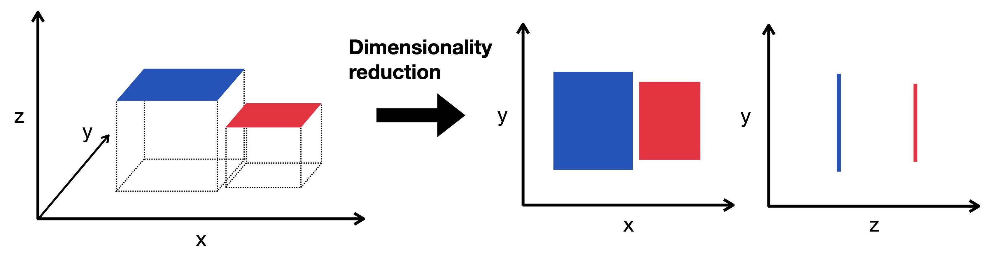

11. 降维#
关键要点
PCA 是一种线性降维技术，它生成按方差排序的、互不相关的主成分，因而具有可解释性和高效性，但不太适合可视化高度非线性的 scRNA-seq 数据。
UMAP 是一种非线性方法，通过构建并优化图表示来同时保留数据的局部和全局结构，因而在单细胞数据的可视化与聚类中非常有效。
环境设置
安装 conda:
在创建环境之前，请确保 conda 已安装在您的系统中。
保存 yml 内容:
将 yml 选项卡中的内容复制到名为
environment.yml的文件中。
创建环境:
打开终端或命令提示符。
运行以下命令：
conda env create -f environment.yml
激活环境:
创建好环境后，使用以下命令激活它：
conda activate <environment_name>
替换
<environment_name>，名称就是在environment.yml文件中指定的那个。在 yml 文件里，它看起来像这样：name: <environment_name>
验证安装:
通过运行以下命令，检查环境是否创建成功：
conda env list
name: preprocessing
channels:
- bioconda
- conda-forge
dependencies:
- conda-forge::ipywidgets=8.1.5
- conda-forge::leidenalg=0.10.2
- conda-forge::numba=0.61.0
- conda-forge::python=3.12.9
- conda-forge::r-base=4.3.3
- conda-forge::r-soupx=1.6.2
- conda-forge::r-sctransform=0.4.1
- conda-forge::r-glmpca=0.2.0
- conda-forge::rpy2=3.5.11
- conda-forge::scanpy=1.11.1
- conda-forge::session-info=1.0.0
- bioconda::anndata2ri=1.3.2
- bioconda::bioconductor-scdblfinder=1.16.0
- bioconda::bioconductor-scry=1.14.0
- bioconda::bioconductor-scran=1.30.0
- bioconda::bioconductor-glmgampoi=1.14.0
- pip
- pip:
- lamindb[bionty,jupyter]
获取数据和笔记本
本书使用 lamindb，并通过 theislab/sc-best-practices 实例 来存储、共享和加载数据集与笔记本。感谢 Lamin Labs 提供免费托管服务。
安装 lamindb
安装 lamindb Python 软件包：
pip install lamindb
可选择创建 lamin 账户
按照以下 说明 注册并登录。
验证你的设置
运行
lamin connect命令：
import lamindb as ln ln.Artifact.connect("theislab/sc-best-practices").df()
你现在应该看到最多100个存储的数据集。
访问数据集（Artifact）
在 Artifacts 页面 搜索该数据集。
加载一个 Artifact 及其对应的对象：
import lamindb as ln af = ln.Artifact.connect("theislab/sc-best-practices").get(key="key_of_dataset", is_latest=True) obj = af.load()
该对象现在已可在内存中访问，并可用于分析。请调整
ln.Artifact.connect("theislab/sc-best-practices").get("SOMEIDXXXX")后缀以获取相应的版本。访问笔记本（Transform）
在 Transforms 页面 搜索该笔记本。
加载笔记本：
lamin load <notebook url>
这会把笔记本下载到当前工作目录。与
Artifacts类似，你可以调整后缀 ID 来获取旧版本。
scRNA-seq 是一种高通量 测序 技术，它会产生在细胞数和基因数上都具有高维度的数据集。因此，scRNA-seq 数据深受“维度的诅咒”之苦。
维度的诅咒
维度的诅咒最早由R. Bellman提出 [Bellman et al., 1957] 并描述在理论上，高维度数据包含更多的信息，但实际上并非如此。高维度数据往往包含更多的噪音和冗余，因此，增加更多信息并不能为下游分析步骤带来好处。
并非所有基因都有信息量，因此并非所有基因对聚类等任务都是必需的。我们此前已通过特征选择来降低数据的维度。下一步，我们将用降维算法进一步降低单细胞 RNA-seq 数据的维度。这些算法是预处理过程中的重要一步，用于降低数据复杂度并便于可视化。
{kind=link}

图11.1 降维将高维数据嵌入到一个低维空间中。这种低维表示在维度尽可能少的同时，仍能捕捉数据的底层结构。这里我们将一个三维对象投影到二维来加以展示。#
Xing等人在独立比较中比较了10个不同降维方法的稳定性、准确性和计算成本 [Xiang et al., 2021]。他们建议使用 t-分布随机邻域嵌入（t-SNE），因为它的整体表现最佳。均匀流形近似与投影（UMAP）则显示出最高的稳定性，并能最好地将原始细胞群分开。在这方面还有一种值得一提的降维方法是主成分分析（PCA），它至今仍被广泛使用。
一般来说，只要为初始化选定了特定的设置，t-SNE 和 UMAP 都非常稳健，并且在很大程度上是等价的。[Kobak and Berens, 2019].
上述所有方法都在 scanpy 中实现。
现在，我们首先导入所有所需的 Python 软件包，然后加载数据集，该数据集已先后经过 质量控制, 归一化, and 特征选择.
在 GPU 上运行
PCA、t-SNE、UMAP 以及邻域图，是最能从 GPU 加速中获益的步骤之列。在大型数据集上， rapids-singlecell 以近乎相同的 API 将它们的运行时间缩短 1–2 个数量级。
import lamindb as ln
import scanpy as sc
# Suppress verbose logging from Scanpy
sc.settings.verbosity = 0
# Set figure parameters for clean, minimal plots
sc.settings.set_figure_params(dpi=80, facecolor="white", frameon=False)
assert ln.setup.settings.instance.slug == "theislab/sc-best-practices"
ln.track()
af = ln.Artifact.connect("theislab/sc-best-practices").get(
key="preprocessing_visualization/s4d8_feature_selection.h5ad", is_latest=True
)
adata = af.load()
我们将使用数据集的一种归一化表示来进行降维和可视化，具体来说是移位对数。
为什么应当使用归一化数据来降维？
首先，基因表达数据通常严重右偏，含有大量零值和少数高表达基因。对数变换有助于将这一分布归一化，使其更对称，并减小极端值的影响，从而防止高表达基因主导任何距离计算。
其次，表达数据中的生物学信号往往遵循乘性而非加性模式。对数变换可将乘性关系转换为加性关系，而大多数降维算法（PCA、t-SNE、UMAP）正是为检测加性关系而设计的。
第三，原始表达数据的方差通常随平均表达水平而变化。对数变换可以稳定这种方差，防止高表达基因主导分析。对于零值（单细胞数据中常见的漏检事件），通常会在对数变换之前加上一个伪计数（log1p），以避免数学错误。
adata.X = adata.layers["scran_normalization"]
首先:
11.1. PCA#
在我们的数据集中，每个细胞都是一个 n_var维向量空间中的一个向量，该空间由某组标准正交基张成。由于 scRNA-seq 受“维度的诅咒”影响，我们知道并非所有特征对理解数据集的底层动态都重要，而且其中存在固有的冗余[Grün et al., 2014]。PCA 通过对原始数据集进行正交变换，构造出一组新的、互不相关的变量，即所谓的主成分（PC）。各主成分是原始数据集中各特征的线性组合，并按方差由大到小排序以定义该变换。在排序中，第一个主成分通常捕获最大的方差。方差最小的主成分会被舍弃，从而在不丢失信息的前提下有效降低数据的维度。
PCA 的优点是可解释性强、计算高效。然而，由于 scRNA-seq 数据集因漏检事件而相当稀疏，因而高度非线性，用 PCA 这种线性降维技术来做可视化并不十分合适。PCA 通常用于选出排名前 10–50 的主成分，供下游分析任务使用。
# setting highly variable as highly deviant to use scanpy 'use_highly_variable' argument in sc.pp.pca
adata.var["highly_variable"] = adata.var["highly_deviant"]
sc.pp.pca(adata, svd_solver="arpack", mask_var="highly_variable")
sc.pl.pca_scatter(adata, color="total_counts")
{kind=link}
如何理解 PCA 散点图
主成分分析(PCA)在数据中寻找细胞(或样本)数值差异最大的方向。
坐标轴：PC1 和 PC2 是第一和第二主成分（方向）。PC1 是数据最分散的方向，PC2 是与 PC1 垂直、变异性次之的方向。
点：每个点都是一个单细胞。每个点的颜色代表在该细胞中检测到的转录本总数（UMIs）。
通过将数据投影到 PC1 和 PC2 上，我们用更少的维度就捕捉到了大部分有意义的变异。
虽然我们的目的不是在现阶段直接从这个PCA图中解释生物意义，但我们可以观察到细胞的异质性:具有类似表达特征的细胞倾向于聚集在一起，这可能会反映不同的细胞类型或状态。
11.2. t-SNE#
t-SNE 是一种基于图的非线性降维技术，它将高维数据投影到 2D 或 3D 分量上。该方法依据数据点之间的高维欧氏距离定义一个高斯概率分布。随后，用学生 t 分布在低维空间中重建该概率分布，并通过梯度下降来优化低维嵌入。
sc.tl.tsne(adata, use_rep="X_pca")
sc.pl.tsne(adata, color="total_counts")
{kind=link}
如何理解 t-SNE 图
坐标轴没有任何含义！
点：每个点代表一个单细胞。颜色代表在该细胞中检测到的转录本总数（UMIs）。
这种图有助于揭示细胞亚群：紧密的聚类可能对应于不同的细胞类型或状态。与保留全局方差的 PCA 不同，t-SNE 强调局部结构。因此，最佳实践是用 PCA 来初始化 t-SNE，以降低噪声并提高嵌入的稳定性。
11.3. UMAP#
UMAP 是一种基于图的非线性降维技术，原理上与 t-SNE 类似。它构建数据集的高维图表示，并优化低维图表示，使其在结构上尽可能与原始图相似。
我们首先计算 PCA，然后基于数据创建一个邻域图。
sc.pp.neighbors(adata)
sc.tl.umap(adata)
sc.pl.umap(adata, color="total_counts")
{kind=link}
如何理解 UMAP 绘图
坐标轴没有任何含义！
点:每个点代表一个单细胞。
颜色表示在该细胞中检测到的转录本总数（UMIs）。
UMAP 既强调局部结构，也兼顾部分全局结构，相比 t-SNE 往往能更好地保留数据的整体形状，即相似的聚类彼此更接近。它基于 PCA 降维后的数据构建邻域图，然后优化一个低维布局，使其反映原始高维空间中的关系。UMAP 被广泛用于可视化单细胞数据中的细胞聚类与轨迹。
11.4. 检查质量控制指标#
现在，我们还可以在 PCA、t-SNE 或 UMAP 图中检查先前计算的质量控制指标，从而有可能识别出低质量细胞。
sc.pl.umap(
adata,
color=["total_counts", "pct_counts_mt", "scDblFinder_score", "scDblFinder_class"],
)
{kind=link}
双细胞得分较高的细胞会被投影到 UMAP 中的同一区域。我们暂时把它们保留在数据集中，但一般来说，这提示可能需要重新审视质量控制策略，以确保尽量少地保留双细胞。
af = ln.Artifact(
adata,
key="preprocessing_visualization/s4d8_dimensionality_reduction.h5ad",
description="anndata after dimensionality reduction",
).save()
af
11.5. 参考文献#
R. Bellman, R.E. Bellman, and Rand Corporation. Dynamic Programming. Rand Corporation research study. Princeton University Press, 1957. URL: https://books.google.de/books?id=rZW4ugAACAAJ.
Dominic Grün, Lennart Kester, and Alexander Van Oudenaarden. Validation of noise models for single-cell transcriptomics. Nature methods, 11(6):637–640, 2014.
Dmitry Kobak and Philipp Berens. The art of using t-sne for single-cell transcriptomics. Nature Communications, 10(1):5416, Nov 2019. URL: https://doi.org/10.1038/s41467-019-13056-x, doi:10.1038/s41467-019-13056-x.
Ruizhi Xiang, Wencan Wang, Lei Yang, Shiyuan Wang, Chaohan Xu, and Xiaowen Chen. A comparison for dimensionality reduction methods of single-cell rna-seq data. Frontiers in Genetics, 2021. URL: https://www.frontiersin.org/article/10.3389/fgene.2021.646936, doi:10.3389/fgene.2021.646936.
11.6. 贡献者#
我们衷心感谢以下人员的贡献：
11.6.2. 审阅者#
Lukas Heumos